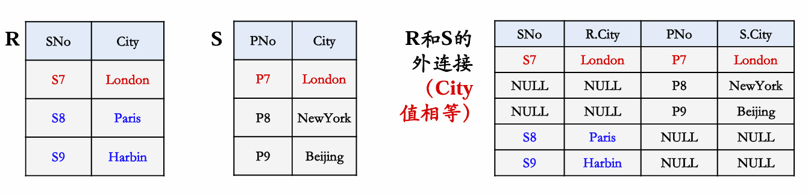

关系模型与关系运算
关系模型、关系模式、关系的区分¶
- 关系模型（关系模式的抽象——表的形式）
- 关系迷失（关系的抽象）
- 关系（关系模型的数据）
关系模型与关系运算概览¶
- 关系运算：关系代数（过程化）和关系演算（非过程化）
- 关系演算：元组演算和域演算
- 关系代数：过程化查询语言，包括运算的集合
元组演算示例：基于逻辑的运算，基于元组的运算
域演算：基于逻辑的运算，基于示例的运算
关系¶
简而言之，一个关系就是一个Table，关系模型就是用于处理Table的
关系模型由三个部分组成
- 描述DB各种数据的基本结构形式
- 描述Table与Table之间所可能发生的各种操作，即关系运算
- 描述这些操作所应遵循的约束条件
第三条也被称为完整性条件
关系模型的三个要素¶
- 基本结构：关系/表
- 基本操作：关系运算
- 基本的：并、差、广义积、选择、投影、更名
- 扩展的：交、连接、除
- 完整性约束：实体完整性、参照完整性、用户自定义完整性
关系与关系模型¶
关系¶
一些疑问
- 为什么把表称为“关系”？
- 如何严格定义Table？
一些定义：
行被称为元组
首先定义列的取值范围为“域(Domain)”
- 一组值的集合，这组值有相同的数据类型
- 如整数的集合、字符串的集合、全体学生的集合
- 再如，由8位数字组成的数字串的集合，由0到100组成的整数集合
- 集合中的元素个数成为域的基数(Cardinality)
再定义“元组”以及所有可能组成的元组：笛卡尔积
一组域\(D_1,D_2,\dots , D_n\)的笛卡尔积为
关系可以用\(R(A_1:D_1,A_2:D_2,\dots,A_n:D_n)\)表示\(R(A_1,A_2,\dots,A_n)\)
其中R是关系的名字，\(A_i\)是属性，\(D_i\)是属性所对应的域，n是关系的度或者目
比如Course (C# char(3), Cname char(12), Chours integer, Credit float(1), T# char(3))
关系的特性¶
- 不同的列可能来自同一个域
- 每一列中的分量来自同一个域，是同一类型的数据
- 列位置互换性：区分依靠列名
- 行位置互换性：区分哪一行是依靠某一或某几列的值
- 关系是以内容（名字或值）来区分的，而不是属性在关系的位置来区分
- 属性不可再分性：又被称为关系第一范式
理论上：任何两个元组不能完全相同；真实的Table可能有完全相同的两行
候选码（键）¶
关系中的一个属性组，其值能唯一标识一个元组，若从该属性组中去掉任何一个属性，它就不再具有这一个性质
关系
Stu(S#, Sname, Sage, Sclass)中S#就是一个候选码，在学生关系中，仍和两个元组的S#是一定不同的又比如选课关系
StuClass(S#, C#, Sname, Sage, Sclass)中(S#, C#)联合起来就是一个候选码
- 在某些关系中，候选码可能不止一组，比如
Stu((S#, Sname, Sage, Sclass, Saddress)，S#和(Sname, Saddress)都是候选码
主码/键¶
- 当有多个候选码时，可以选定一个作为主码
包含在任何一个候选码中的属性被称为主属性，其他属性被称为非主属性
在最极端情况下，关系所有属性组是这个关系候选码，称为全码
外码¶
关系R中的一个属性组，它不是R的候选码，但它与另一个关系S的候选码相对应，则称这个属性组为R的外码或外键。
关系模型中的完整性¶
实体完整性¶
- 关系主码的属性值不能为空
- 空值：不知道或者无意义的值
空值的含义
- 在进行关系操作时，有时关系中的某属性值在当前是填不上的，比如档案中有“生日不详”、“下落不明”、“日程尚待公布”等，这时就需要空值来代表这种情况。关系模型中用‘?’表征
- 数据库中有了空值，会影响许多方面，如影响聚集函数运算的正确 性，不能参与算术、比较或逻辑运算等
参照完整性¶
如果关系R1的外码Fk与关系R2的主码Pk相对应，则R1中的每一个元组的Fk值或者等于R2中某个元组的Pk值，或者为空值
换言之：如果关系R1的某个元组t1参照了关系R2的某个元组t2，则t2必须存在
用户自定义完整性¶
用户针对具体的应用环境定义的完整性约束条件
如S#要求是10位整数，其中前四位为年度，当前年度与他们的差必须在4以内
关系代数¶
基本操作¶
| 集合操作 | |||
|---|---|---|---|
| UNION | R | S | \(R\cup S\) |
| INTERSECTION | R | S | \(R\cap S\) |
| DIFFERENCE | R | S | \(R- S\) |
| Cartesian PRODUCT | R | S | \(R\times S\) |
| 纯关系操作 | |||
|---|---|---|---|
| PROJECTION | R | \(\pi_A(R)\) | |
| SELECT | R | \(\sigma_{Con}(R)\) | |
| JOIN | R | S | \(R\Join S\) |
| DIVISION | R | S | \(R\div S\) |
某些关系代数操作，如并、差、交等，需满足“并相容性”
并相容性¶
- 参与运算的两个关系及其相关属性之间有一定的对应性
-
定义：关系R与关系S存在相容性，当且仅当：
-
关系R和关系S的属性数目必须相同；
- 对于任意i，关系R的第i个属性的域必须和关系S的第i个属性的域相同
假设：\(R(A1, A2, … ,An) , S(B1, B2, …,Bm)\) R和S满足并相容性：\(n = m\) 并且 Domain(Ai) = Domain(Bi)
用关系代数表达检索请求的示例¶
纯关系操作-选择 (Select)¶
定义：\(\sigma+{Con}(R)\)，从关系R中选择出满足给定条件condition的元组构成
示例：给定关系R，获取\(\sigma_{A3>0}(R)\)
| A1 | A2 | A3 |
|---|---|---|
| a | a | 10 |
| a | d | -4 |
| f | b | 5 |
| A1 | A2 | A3 |
|---|---|---|
| a | a | 10 |
| f | b | 5 |
纯关系操作-投影 (Project)¶
定义：给定一个关系R，投影运算结果也是一个关系，记作\(\prod_A R\)
它从关系R中选出属性包含在A中的列构成，若投影后有重复元组，则应该去掉*
投影操作默认可能会保留重复的元组（行），但是在有些数据库系统中，投影操作可能会默认去除重复项。是否去除重复项通常取决于数据库的配置或查询的定义。
纯关系操作-\(\theta\)连接 (\(\theta\)-join)¶
投影与选择操作只是对单个关系进行操作，而实际应用中往往涉及多个表之间的操作。比如：查询数据结构成绩在90分以上的学生姓名
定义：给定关系R和关系S，R与S的\(\theta\)-连接运算结果也是一个关系，记作\(R\underset{A\theta B}{\Join} S\)
上述符号表示由关系R、S的笛卡尔积中，选取属性R中A与S中属性B之间满足\(\theta\)条件的元组构成
R关系
| A | B |
|---|---|
| a | 1 |
| b | 2 |
S关系
| H | C |
|---|---|
| 1 | x |
| 1 | y |
| 3 | z |
\(R\underset{A\theta B}{\Join} S\)
| A | B | H | C |
|---|---|---|---|
| a | 1 | 1 | x |
| a | 1 | 1 | y |
| a | 1 | 3 | z |
| b | 2 | 3 | z |
与自身Join示例：查询至少210130101与210130102号同学学过的所有课程号
\(\pi_{SC.CNo}(\sigma_{SC.SNo="2101300101"\land SC1.SNo="2101300102"}(SC\underset{SC.CNo=SC1.CNo}{\Join}\rho_{SC1}(SC1)))\)
纯关系操作-除 (division)¶
使用除法操作的可能情形：查询全部的，所有的...
示例：查询选修了学号2101400201学生所学全部课程的同学的姓名
\(\pi_{Sname}(S\Join \left(\pi_{S_{CNo,SNo}}(SC)\div \pi_{CNo}(\sigma_{SNo="2101400201"}(SC)))\right)\)
在使用除法操作时，注意合理使用\(\pi\)进行去重，避免出现错误结果
纯关系操作-外连接 (Outer-join)¶
现有三个表，需要给出所有老师的有关信息，包括姓名，工资，所教课程等
Teacher(TNo, Tname, Salary) Course(CNo, Cname) Teach(TNo, CNo)
若有部分老师的姓名和工资信息丢失了，那么这些老师不能和其他表的元组形成连接元组，导致信息丢失
定义：两个关系R与S进行连接时，如果关系R(或S)中的元组在S(或R)中找不到相匹配的元组，则为了避免该元组信息丢失，从而将该元组与S(或R)中假定存在的全为空值的元组形成连接，放置在结果关系中，这种连接称之为外连接(Outer Join)

外连接方式：
- 左外连接（保留左侧失配元组信息） ⟕
- 右外连接（保留右侧失配元组信息） ⟖
- 全外连接 ⟗